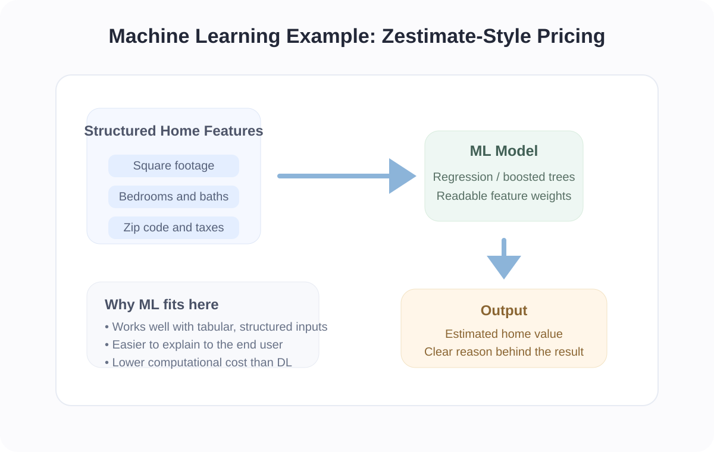
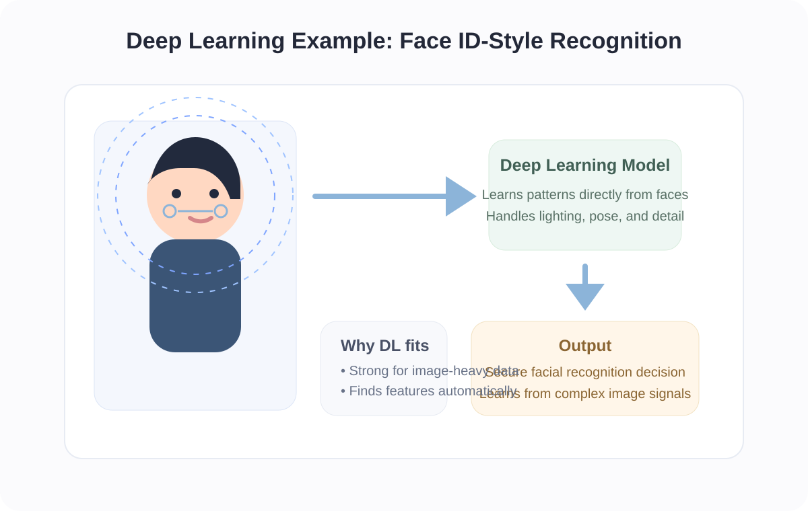

Artifact Information
Introduction
This artifact explores how Machine Learning and Deep Learning are applied differently depending on the data type, complexity, and business need.
It is designed to show that the best model choice depends on the structure of the problem and the type of input being analyzed, rather than assuming the more complex method is always better.
Description
The project compares structured and unstructured data use cases such as home price prediction and face recognition.
By using clear real-world examples, the artifact makes it easier to understand how ML performs well on tabular business-style data while DL becomes more useful for high-dimensional image-based tasks.

The ML example represents structured inputs where interpretability and tabular features make traditional machine learning a strong fit.

The DL example represents complex visual input where feature extraction and layered pattern learning become much more important.
Objective
- Understand ML vs DL
- Identify correct use cases
- Analyze trade-offs
Process
- Selected real-world scenarios
- Analyzed data types
- Applied ML and DL concepts
- Compared outputs
- Matched each method to the level of complexity and explainability required
- Summarized trade-offs around accuracy, scalability, and interpretability
Tools and Technologies Used
Value Proposition
This artifact demonstrates how model selection should be based on the nature of the problem rather than complexity alone.
Unique Value: Helps choose the correct AI model.
Relevance: Useful for AI and data professionals.
Reflection
This project improved my understanding of how model choice should depend on the structure of the data, the explainability needed, and the scale of the problem.
References
Scikit-learn Documentation; TensorFlow Documentation; Goodfellow, Bengio, and Courville – Deep Learning